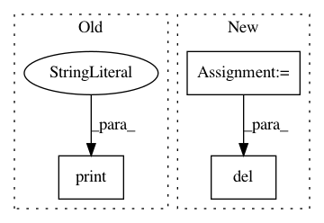

e03b1da510463be2b74dbbffc633ac7973da3869,talos/__init__.py,,,#,18
Before Change
if is_connected() is True:
import astetik as plots
else:
print("NO INTERNET CONNECTION: Reporting plots will not work.")
from kerasplotlib import TrainingLog as live
After Change
if key.startswith("__") is False:
delattr(utils, key)
template_sub = [templates.datasets,
templates.models,
templates.params,
templates.pipelines]
keep_from_templates = ["iris", "cervical_cancer", "titanic", "breast_cancer",
"icu_mortality"]
for sub in template_sub:
for key in list(sub.__dict__):
if key.startswith("__") is False:
if key not in keep_from_templates:
delattr(sub, key)
del commands, parameters, scan, reducers, model, metrics, key, del_from_utils
del examples, sub, keep_from_templates, template_sub
__version__ = "0.5.0"
In pattern: SUPERPATTERN
Frequency: 4
Non-data size: 3
Instances
Project Name: autonomio/talos
Commit Name: e03b1da510463be2b74dbbffc633ac7973da3869
Time: 2019-02-22
Author: mailme@mikkokotila.com
File Name: talos/__init__.py
Class Name:
Method Name:
Project Name: nipy/dipy
Commit Name: c841f330b09480b0bad4d8bd7f6640fa1504141b
Time: 2014-10-08
Author: marc.cote.19@gmail.com
File Name: dipy/tracking/benchmarks/bench_streamline.py
Class Name:
Method Name: bench_length
Project Name: kk7nc/RMDL
Commit Name: 16f50016cabab22efde6f183c89efe0a11b0c683
Time: 2018-03-07
Author: kk7nc@virginia.edu
File Name: src/RMDL_Image.py
Class Name:
Method Name: image_classifciation
Project Name: facebookresearch/pytext
Commit Name: 3b5102819bcf043dc4799ede1a4ae0b558aacb04
Time: 2020-07-09
Author: huaipan@fb.com
File Name: pytext/optimizer/sparsifiers/sparsifier.py
Class Name: SensitivityAnalysisSparsifier
Method Name: sensitivity_analysis